Discover Kolkata's most famous foods!
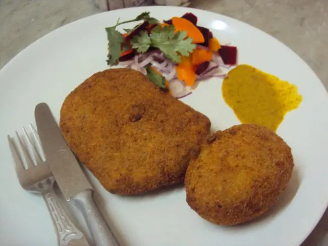
allen kitchen
This 132-year-old restaurant is a proud landmark of the city’s exquisite cuisine serving a variety of finger food. This restaurant operates only for 5 hours between 4 pm to 9 pm but is always packed no matter when you decide to go. It has been a favourite for generations for its reliable cooking and lip-smacking dishes.
Where:
40/1, Jatindra Mohan Avenue, Shobha Baza
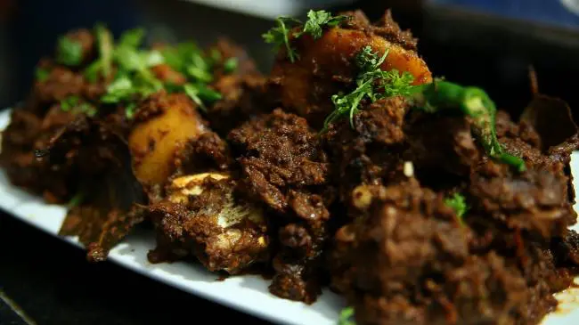
Golbari
Kolkata is incomplete without its North Kolkata charm, which brings me to my next place. For generations on end, Golbari and Kosha Mangsho have been synonymous. What’s so exquisite about this place is that even after 94 years of running, it has never changed its menu. This places once known as the New Punjabi restaurant is now colloquially been renamed to Golbari for its spherical facade ( ‘gol’ meaning circle in Bengali). What most people do not know about this place is that Golbari famous for serving Bengali delicacies like Kosha Mangsho was started by a Punjabi and not a Bengali. If you are in Kolkata, your trip won’t be worthwhile until you try the soft mutton cooked in the dark velvety texture of gravy otherwise popularly known as Kosha Mangsho. And mind you, they have no branches!
Where:
New Punjabi Hotel, 211, A.P.C. Road, Shyam Bazaar
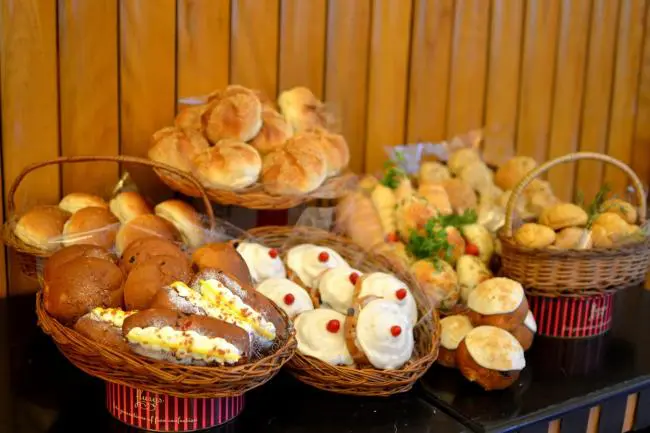
Flury’s
A must stop for all those with a sweet tooth. This place was a famous one amongst the English, as a popular tearoom. Established in 1927, Flury’s primed in serving confectionary items to all its customers. Other than the regular cakes and pastries, the English breakfast is a favoured choice for all its regulars. If you want a taste of the city’s one of the finest baked cakes, pastries and other such Swiss and English delicacies, then this is the place not to be missed at all!
Where:
18, Park Street, Park Street Area
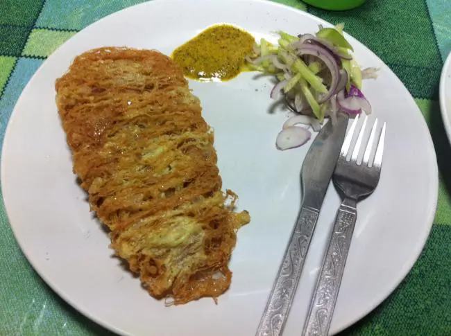
Dilkusha Cabin
Serving for more than a century, located in the center of College Street, this was once a renowned place for their rendition of the legendary dish called Kabiraji Cutlet. Dilkusha literally means ‘ heart-pleasing’, and is still running serving its legendary Kabiraji and cutlet. It bears testimony to the culture and the tradition of the older generation. This 108-year-old cabin had six other cabins spread in the city, the one in College Street still survives.
Where:
88, Mahatma Gandhi Rd, College Squar
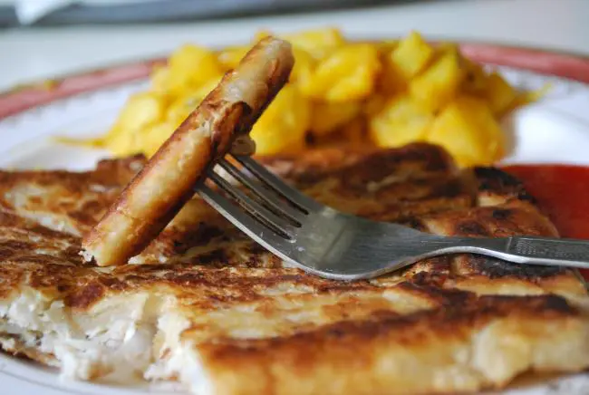
Anadi Cabin
Another illustrious cabin in the city, it still receives a number of visitors for its history of serving for generations till now. It is one of those timeless eat outs with customers of all age groups. Famous for its keema filled Mughlai paratha served with a side of potato curry and onion salad, a taste of its specialties has kept its customers wanting for more for over 60 years now.
Where:
9, Jawaharlal Nehru Road, New Market Area
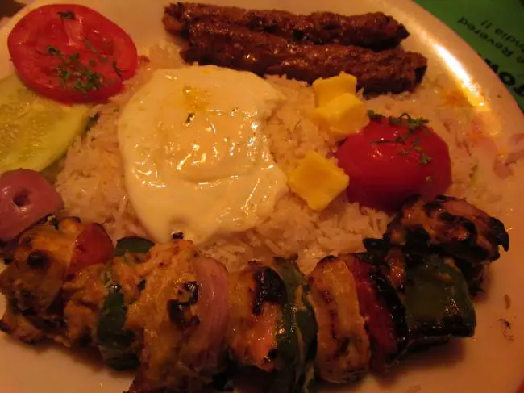
Peter-cat
For all those who know Kolkata, even a little bit will realise that Park Street will be a frequent on this list with a large number of legendary restaurants its boasts of, one of them being Peter Cat. Located in Park Street, Peter Cat popularised for its unique Chelo Kebab has been in the business since 1975. Their Chelo Kebab Platter which is a combination of buttered rice with poached eggs and grilled kebabs and veggies is so unique that it is no surprise that you will often see customers queuing up for the privilege of tasting the specials, especially during the festivals and the New Year’s.
Where:
18A, Park Street, Park Street Area
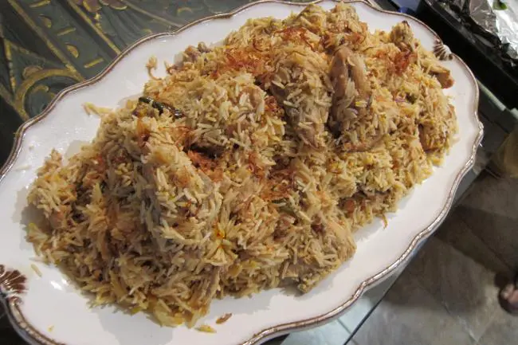
Aminia
Serving Biryanis from a numerous centers, the first Aminia was opened in Dharmatala near New Market. What very few people would know is that this place came into existence on the day of independence and saw itself into popularity because of the young and novice footballers of Bengal who would turn up for a plate of biryani from their favourite Biryani place after a good game.
Where:
6A, S.N. Banerjee Road, New Market Area
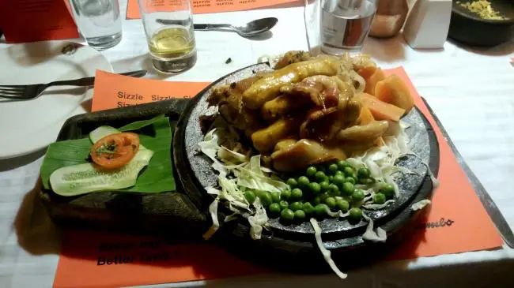
Mocambo
Mocambo is a regular destination for families who have been visiting the place as a course of its lineage. Known for its courteous staff and the treatment to its customers, Mocambo is on the list for all the right reasons. Pioneering in dishes like Fish A La Diana, Chicken Ala Kiev, Angels on Horseback, this place has been a favourite for foreigners and expatriates in the city. For those who do not know this, Mocambo is such a legendary restaurant that it had been scripted into the Bollywood movie, Kahani.
Where:
25B Park Street, Park Street Area
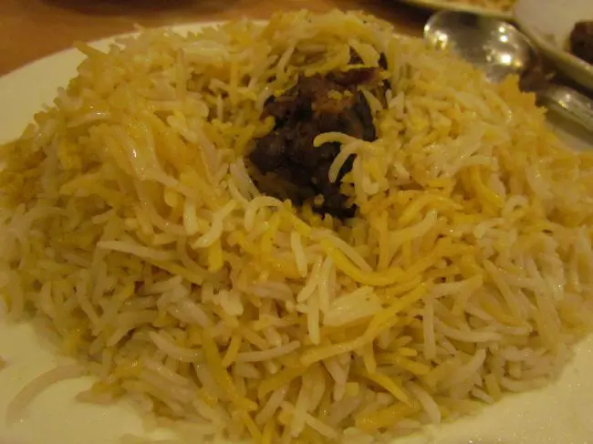
Royal Indian Hotel
A Biryani place, which arguably the first ones to bring Biryani to this city. It competes with its multiple adversaries (other biryani chains in the city) with the difference of the potato being absent from any of the biryanis they serve. According to their history, they have since their establishment served Lucknowi Biryani. Even though it does not contain a Bengali’s favourite element of biryani, this place is full most of the times.
Where:
147, Rabindra Sarani, Bara Bazar
Must Have:
Chicken/ Mutton Biryani, Mutton Chaap
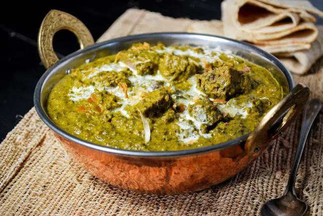
Amber
For those with friends who grew up in Kolkata, a lot of the family gathering stories would mention a common name Amber. Amber is a fine dining restaurant where most family gatherings took place over a three-course meal of North Indian delicacies.
Where:
11, Waterloo Street, Esplanade
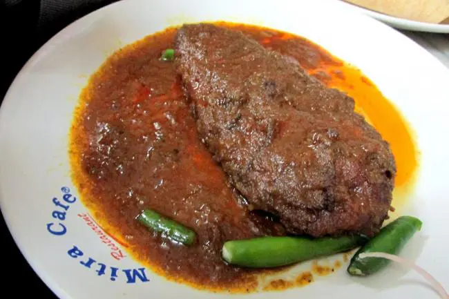
Mitra Cafe
This century old cafe, once a worshipped destination for sighting celebrities, is all about the old world charm. Still famous for its Kabiraji, Brain Chop, Mutton Chop, the place is full most of the times and the specials disappear within an hour of its opening. Established during the 1920’s, it is one of the remaining ‘cabins’ in Kolkata now. Located near Sovabazar metro station, it is recognised by a visibly cluttered room with a long queue proceeding from the shop
Where:
47, Jatindra Avenue, Shobha Bazar